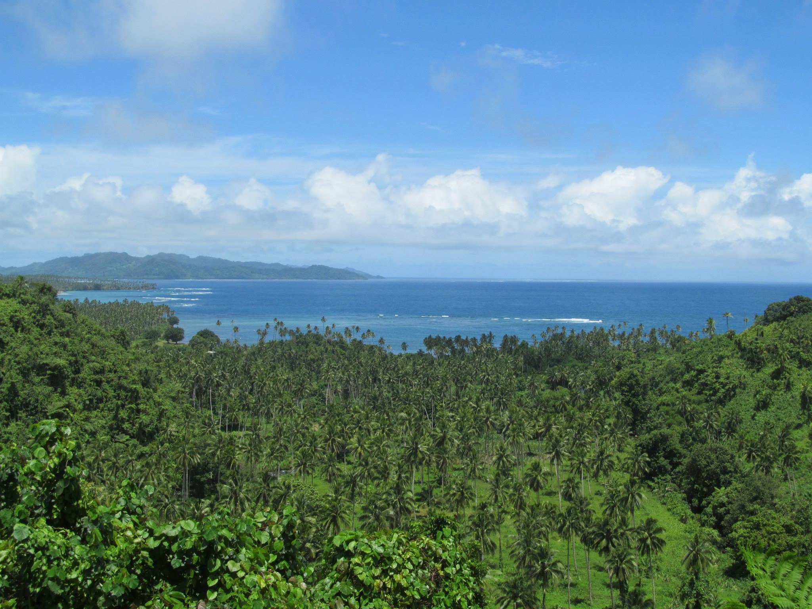
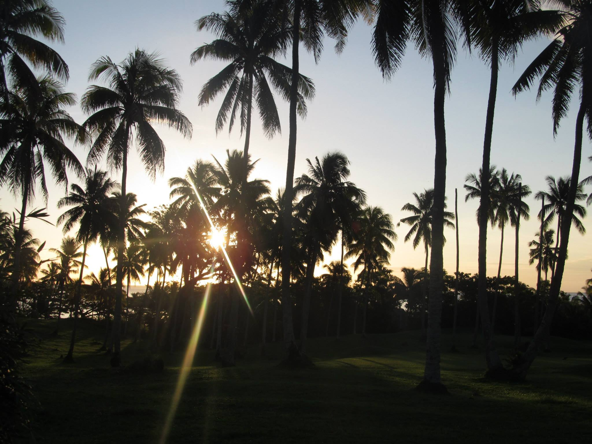
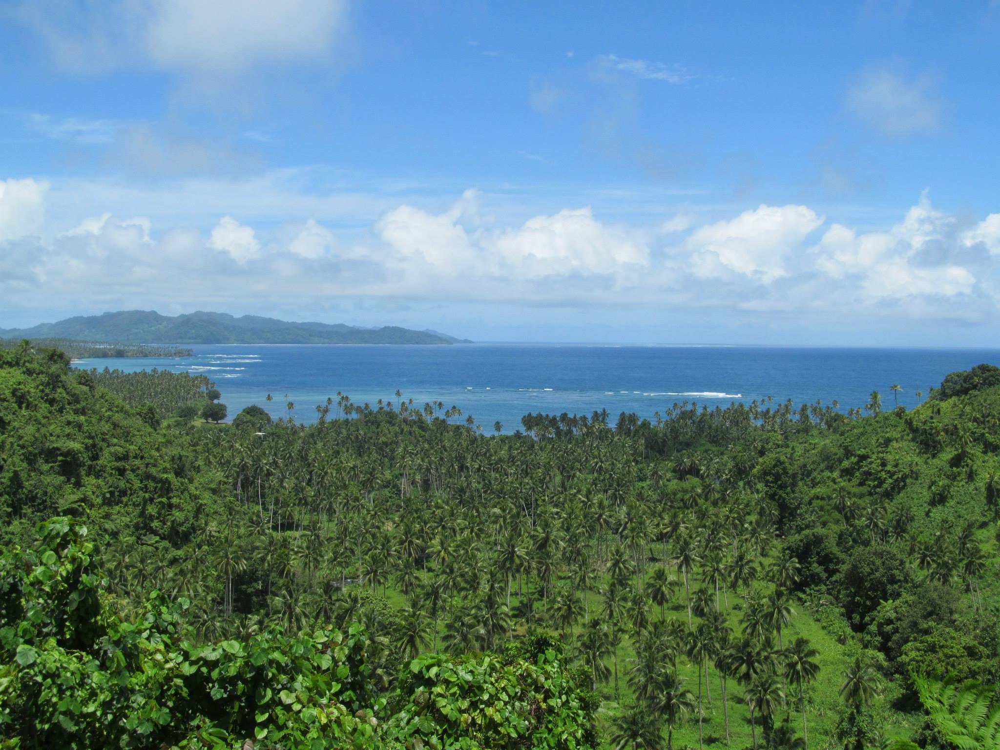
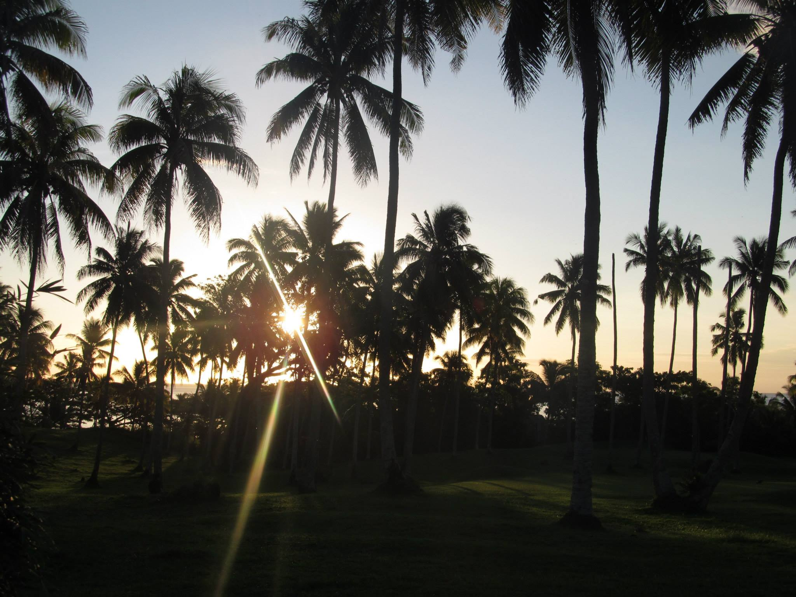
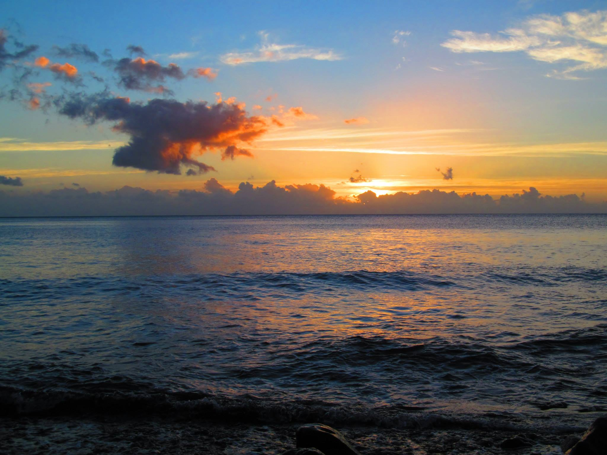
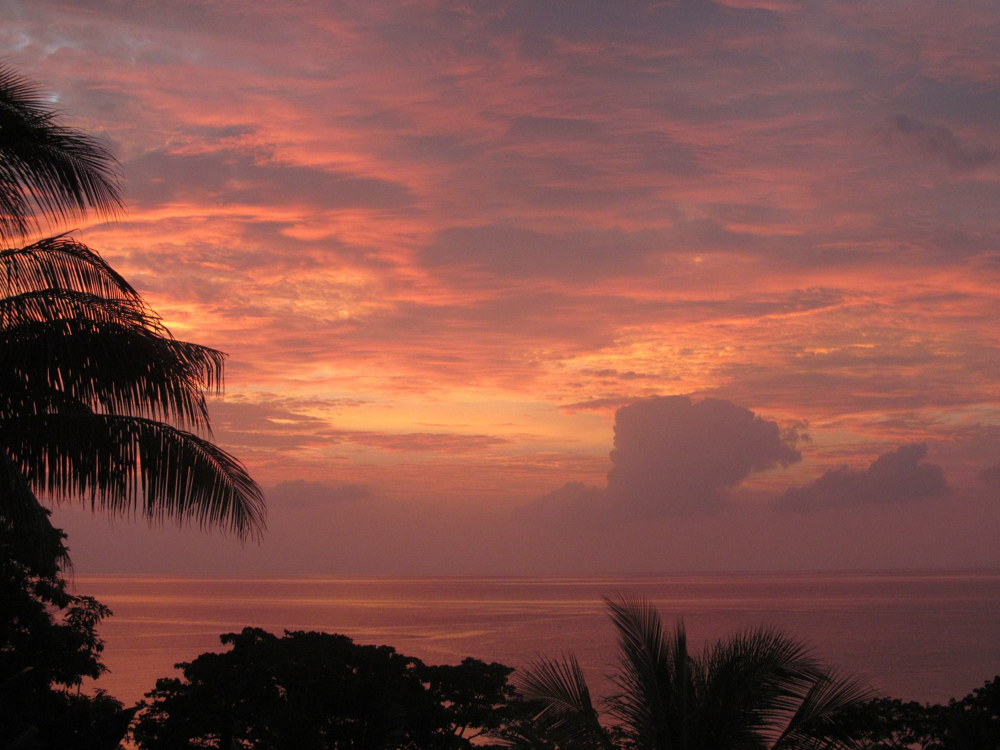
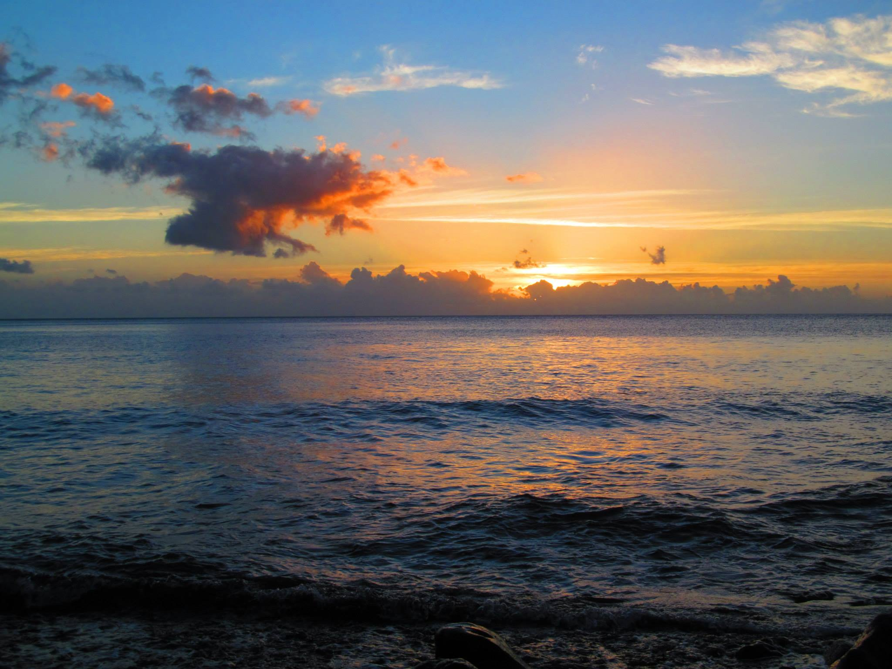
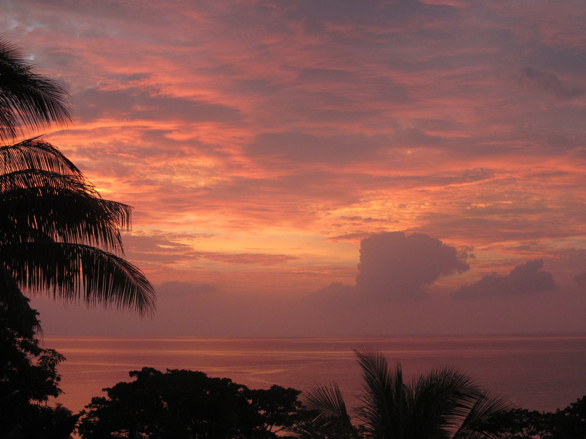

In Jamaica I stayed in a beautiful all-inclusive resort. I had a lot of fun climbing up a waterfall and riding a roller coaster in the middle of the jungle. Below are a few photos and a video.
In Mexico I visited the ruins of Chichen Itza, it was one of the most impactful experiences I've ever had. I must say that the amount of trash collected along the beaches in the part of Mexico I visited was very unnerving. Nonetheless I got some amazing pictures. Check out the gallery below.

Fiji was my most recent trip. I got the most amazing pictures in Fiji that I'm so pleased to share. I stayed in a very undeveloped part of the island and spent most of my days hiking or snorkeling. I plan to go back to Fiji as soon as I'm done with school for another visit. Check out the pictures from Fiji below!
 



 


